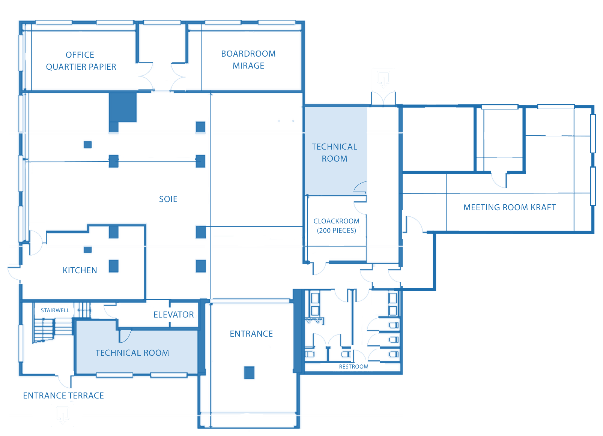
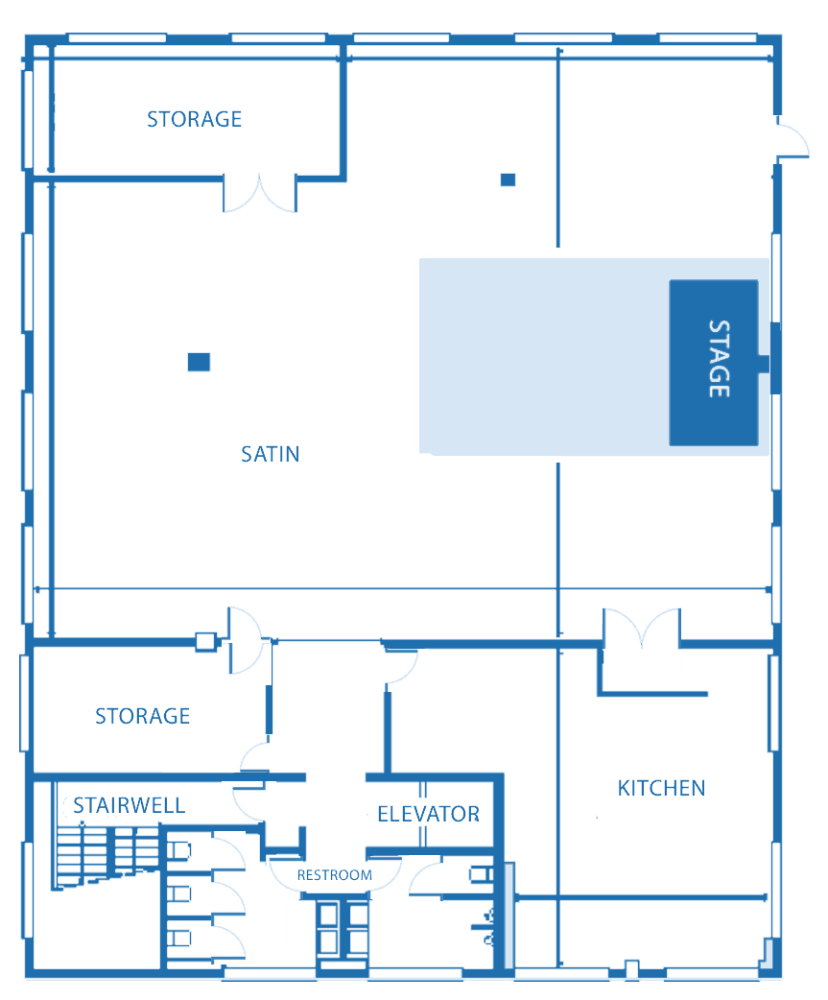

Attendee Guide
Wednesday 4 November, Quartier Papier in Zaventem near Brussels. Doors open at 13:30, the program starts at 14:25 and dinner runs until 21:30.
Getting there
Quartier Papier, Fabriekstraat 55-59, 1930 Zaventem.
- By train: direct trains from Brussels-Schuman, Central and Midi to Zaventem take about 15 minutes. The venue is a 10-minute walk from Zaventem station.
- From the airport: 5 minutes by taxi from Brussels Airport.
- By car: free parking with EV charging at the venue. Use Waze: local traffic filters confuse standard GPS.
Running late? Just come in and find a volunteer, or call or text +49 157 57123553.
Arrival & registration
Enter at Fabriekstraat 55-59. The registration desk is on the ground floor, where you'll pick up your name badge. You can leave your coat and luggage at the cloakroom next to it; volunteers hand out tickets.
The talks, workshop, panel and dinner are in Satin, on the 3rd floor. There's a lift to all floors.


Program
Everything after registration is in Satin on the 3rd floor.
Guest list
- Charles MartinetOxford Martin AI Governance Initiative
- Duncan EddyStanford University
- Nicoleta KyosovskaCentre for European Policy Studies (CEPS)
- Friederike Grosse-HolzEuropean AI Office, European Commission
- Sergey LagodinskyMEP, Greens/EFA
- Daan JuijnDirector of Research, Arq Foundation
- Virginie JoronMember of the European Parliament
- Kim van SparrentakMember of the European Parliament, Greens/EFA
- Diego LeónLegal Adviser, Office of the Secretary General, European Data Protection Supervisor
- Benjamin BögelCabinet of the Commission EVP for Tech Sovereignty, Security and Democracy
- Anja WyrobekLead Digital Advisor to MEP Birgit Sippel
- Elsa DonnatLegal Officer, European AI Office, European Commission
- Isabel BarberáAI Safety Unit Lead, Dutch Data Protection Authority
- Ruxandra DeaconuCouncil of Europe Liaison Office to the EU
- Bengüsu ÖzcanArq Foundation
- Naci CankayaTechnical Governance Researcher, MIRI
- Eliška AndršPolicy Researcher, Future of Life Institute
- Thomas LilamandSenior Research Scholar, Institute for Law & AI
- Samuel GoodgerPolicy Analyst, European Policy Centre
- Arslan JurionCeSIA (French Center for AI Safety)
- Jonathan SchmidtThe Future Society
- Sven HerrmannEuropean AI Governance, The Future Society
- Calvin DuffPour Demain Europe
- Jimmy FarrellAstralis Foundation
- Mattias BjärnemalmSecretary General, European Pirates
- Jelle DondersStrategic Advisor on AI
Food & drinks
Coffee, tea and snacks are available from 13:30 and during the breaks. Dinner is a buffet from 19:30, catered by Artfood.
Menu: to add
We've passed on the dietary needs from your registration to the caterer. If anything changes, just email us at mail@aisafetyaachen.org and we'll do our best.
Practical
Wi-Fi
Network TBD · Password TBD
Photos & recordings
We won't take photos or recordings at the Forum, and we'd ask you not to either.
Accessibility
All floors are reachable by lift. If you have any accessibility needs, let us know in advance and we'll make sure they're covered.
Getting help
Volunteers in team T-shirts are around all day, and the registration desk on the ground floor is staffed throughout. For anything urgent on the day, call or text +49 157 57123553. If you need a quiet spot for a call, ask a volunteer.
Before the event, email mail@aisafetyaachen.org.
Getting home & after the event
- Trains from Zaventem back to Brussels run into the late evening; check the SNCB app for times. Volunteers are happy to help you call a taxi.
- If we agreed to cover your travel, send your receipts and bank details to mail@aisafetyaachen.org after the event.
- We'll send a short feedback form after the Forum. It helps us a lot.
Privacy
We use your registration details only to organise the Forum: the guest list on the event page, badges, catering and travel reimbursement. Ask us at mail@aisafetyaachen.org if you'd like anything changed or removed.